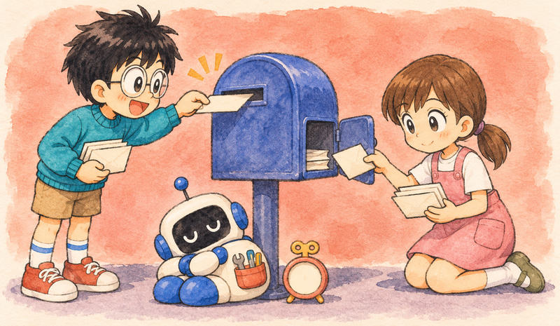
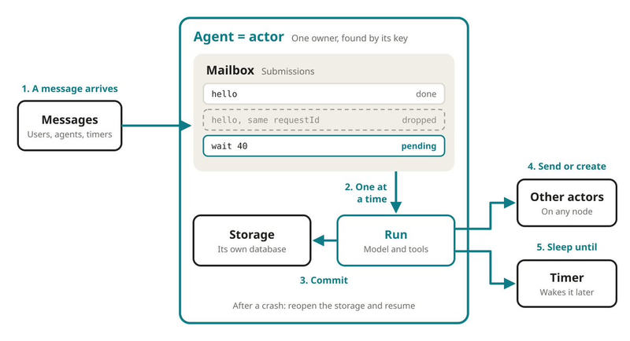
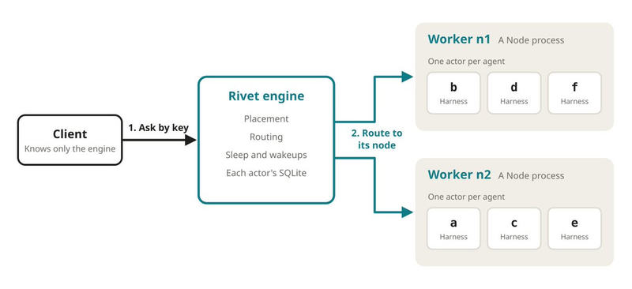
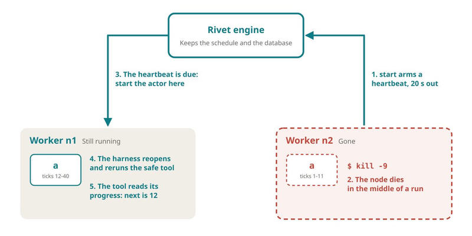

Feature 13 · ARTICLE · 2026 11
Pi Durable ♥ Actors: One Agent, One Owner, Any Worker
I read “actor” wherever a new agent framework says “agent”, and check whether the page still makes sense. If the framework is any good, it does. Agents are actors with, well, agency. Pi Durable gives you one very good actor. What it does not give you is the system around it: something that decides which machine an agent lives on, routes calls to it, wakes it when a timer is due, and moves it when the machine dies. I ran Pi Durable inside Rivet’s actors on a small cluster on my laptop. Agents spread across two worker nodes without my arranging it, called each other across nodes, and slept through a reminder that woke them on time. When I killed a node, its agents did not recover by themselves. With a ten-line heartbeat, they finished on the surviving node with no tick missing or repeated.

Why agents look like actors

An actor receives a message, and in response it can send messages, create actors, and decide how to handle the next one. Its state is its own, and it handles one message at a time. Erlang added “let it crash” with a supervisor to restart it. Orleans added the virtual actor, addressed by a key and woken wherever a message finds it. Cloudflare’s Durable Objects are the same idea with storage attached.
A long-lived agent wants all of it. Anthropic’s Building always-on agents, out last week, never says “actor”, but one of its rules reads: “An inbox should only have one active worker at a time.” A durable inbox with one worker is a mailbox.
What the old frameworks did not face is a behavior that takes four minutes, costs money, and cannot be replayed for free. That is the job of a durable harness. When I wrote about Pi Durable, the list of things the host must still do included this:
Storage ownership: Enforce one process per storage; the harness supplies no cross-process ownership lock.
I read that as a gap back then. Now it reads like the definition of an actor: state that exactly one process may touch. The rest maps too. The harness’s storage is private state, submissions are the mailbox, a requestId admitted once means a message is not delivered twice, resume() from checkpoints is restart after a crash, and sleepUntil is waiting without a thread.
My assistant app runs one harness in one process on one SQLite file, and it runs well that way. Heavier work, several teammates on long tasks and routines firing while I am away, is where one process stops being enough. That missing system is what an actor runtime is.
What Rivet adds
Rivet’s engine is the control plane: placement, routing, sleeping and waking actors, noticing dead nodes. RivetKit is the TypeScript library; each actor gets its own SQLite database, and the data lives with the engine, not the worker. My workers had no data directory at all. @rivet-dev/pi puts a Pi Durable harness inside an actor.
That package was announced on October 7, six days after Pi Durable shipped, with “survives crashes, exactly-once input” among its claims. I tried the crash claim, on @rivet-dev/pi 0.5.6, rivetkit 3.1.1 and Pi Durable 1.5.2. I did not try streaming, sandboxes, auth or cron schedules, and I did not measure the memory. I ran everything locally.
A cluster on my laptop

The actor is one pi() call over plain Pi Durable tools and tasks. The client asks for getOrCreate(["alice"]); I never created alice, and the engine found or started her somewhere. My stand-in model answers from a script and prefixes each reply with the node that produced it.
One engine, two workers, n1 and n2. Six fresh agents, one hello each: three landed on each node, and I did nothing to arrange it.
An agent can ask another through a tool that is a client call. Its requestId is derived from the calling task, so if the caller dies and the tool reruns, the peer should not run the question twice. I did not kill a caller mid-call to check it. Calls worked from n1 to n2 and back. The call holds a connection open for the peer’s whole run, which is fine for a quick question and wrong for an hour of research.
A reminder is a task that sleeps until a time and then appends an entry. I wrote no timer code; the harness reports its earliest wake, and the package turns that into a scheduled wake. With a reminder 90 seconds out, Rivet unloaded the agent after 30 idle seconds and loaded it again 24 ms after the reminder was due. For that minute the agent was not loaded on any worker. It existed as a schedule and a database in the engine.
Killing a node

wait 40 works for 40 seconds, writing one tick a second as a transcript entry that records its node. The tick and the progress record go into one commit, so they are stored together or not at all. My first version kept progress in a task memo, where the first write wins, and it repeated ticks after a crash. The single commit is the thing Pi Durable is for.
First attempt. Six agents running, kill -9 on n2. The agents on n1 finished. The ones from n2 sat at their last tick after 50 seconds and again after 3 minutes. Calling one started it on n1 and it finished correctly, so nothing was lost, but nothing woke up either. crash_policy: "restart" behaved the same.
A heartbeat. An agent needs something durable that calls it while it has work:
start: async (c, content: string, requestId: string) => {
await c.schedule.after(20_000, "heartbeat");
const root = await c.pi.root(BACKGROUND);
const input = { type: "input", content, requestId } as const;
const submission = await root.submit(input, BACKGROUND);
return { submissionId: submission.id };
},
heartbeat: async (c) => {
if (c.pi.wake().active) await c.schedule.after(20_000, "heartbeat");
},
The schedule belongs to the engine, so it survives the node. When it fires, the actor starts somewhere, opening c.pi resumes unfinished work, and the heartbeat re-arms while work is left. It is closer to a watchdog than to an Erlang supervisor: recovery waits for the next beat. I may have missed a setting that does this for me, and I would be glad to delete those lines.
Second attempt. I touched nothing for 80 seconds after the kill. Agent a had written ticks 1 to 11 on n2 and 12 to 40 on n1; c and e split the same way. No tick was missing or repeated. The agents that were on n1 all along did not notice. Rivet placed the actor and gave it its database, Pi Durable reran the replay-safe tool task, and my tool read its own progress.
Two limits. I killed the node; I did not cut it off from the engine while leaving it alive, which is where single ownership is really tested. And nothing repeated because my tool commits progress with its effect in one storage. A tool that sends an email has the same problem on Rivet as anywhere else, and the answer is still an idempotency key the other side honours.
What I would build otherwise
Enforced single ownership with leases and a fence against a slow node writing after replacement; storage that outlives a machine; placement and routing; wakeups that survive restarts; failure detection; sleep and streaming. A prototype is a few days. Something I would trust with unattended work is a lot longer, and I would own ownership and failure detection for as long as it ran. An actor runtime does most of that list. The heartbeat shows that “most” still needs checking.
The cheapest alternative is to need none of it. My assistant app has not outgrown one process. I did this to find out what the next step looks like before I have to take it.
Closing thought
The Rivet-specific code in my spike is small: the pi() call, the client, and the heartbeat. The tools, tasks, and documents are plain Pi Durable and would move to another host. So the next time I read “agent” as “actor”, I have something to run it on.